Research lines
Each line asks a crystal to do something different. The work behind them is shared: specification, mechanical simulation, cleanroom fabrication, crystallographic metrology, then validation in the lab and on beam.
Accelerators and colliders
Crystals that steer beams, make positrons, emit radiation and shorten the showers in calorimeters.
-
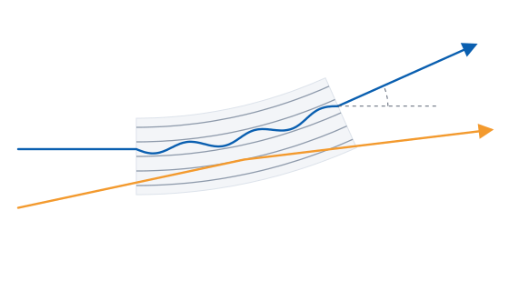
Beam steeringBent crystals for particle accelerators
A few millimetres of bent silicon deflect TeV protons, the work of a magnetic field of hundreds of tesla.
6.5 TeV: first channeling in a particle accelerator, the LHC. 96 papers →
-
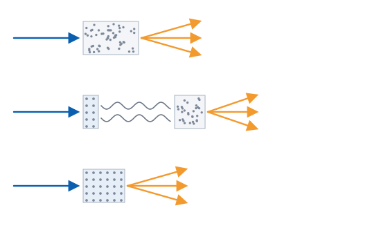
Positron sourceOriented crystal targets for future colliders
Aligned with a crystal axis, tungsten turns electrons into photons and positrons with less material and less heat.
+10% positrons for FCC-ee, with 14% less power in the target. 8 papers →
-
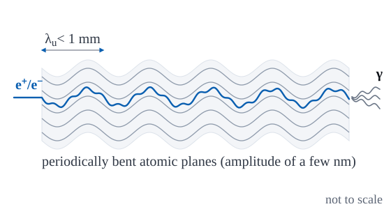
Crystalline undulatorsHard photons from periodically bent crystals
A crystal with periodically bent planes makes channeled particles wiggle with a sub-millimetre period and emit hard photons.
Ten periods of 334 µm in a 160 µm silicon crystal, with an undamaged lattice. 18 papers →
-
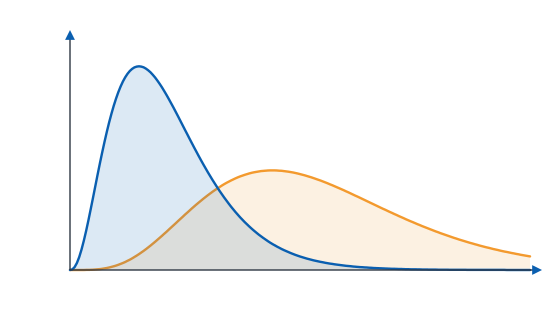
Oriented calorimetersFaster electromagnetic showers in PbWO₄
Aligned with the beam, a scintillating crystal contains an electromagnetic shower in a fraction of its usual depth.
Five times shorter radiation length in aligned lead tungstate. 11 papers →
X-ray and γ-ray optics
Bent and bonded crystals that select, split and focus photons.
-
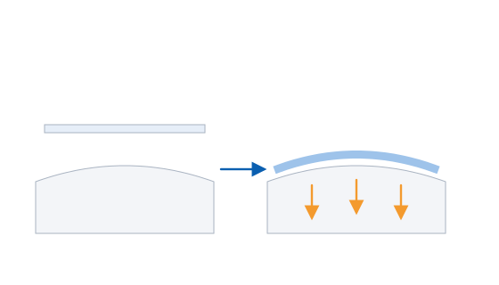
Crystal bondingGlue-free assemblies that keep their curvature
Bonded to a substrate figured to the right shape, a crystal takes that shape and keeps it, with no glue and no holder.
180 GeV hadrons deflected by a crystal bent by anodic bonding. 2 papers →
-
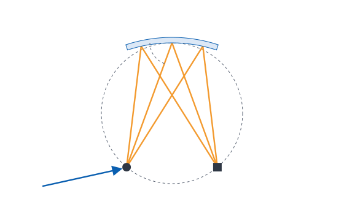
X-ray spectroscopyBent crystal analyzers
Crystals bonded to shaped substrates keep the exact curvature that sharp X-ray spectra need.
Quartz and lithium niobate analyzer prototypes, tested at ESRF.
-
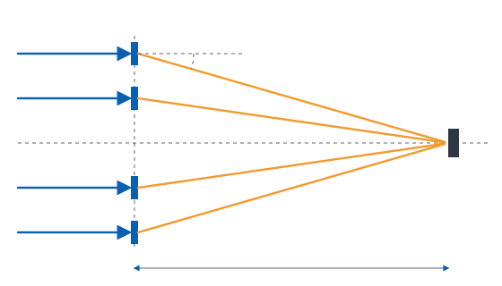
Laue lensesFocusing γ rays for astrophysics
Above 100 keV no mirror focuses photons. Bent crystals, arranged in a lens, can.
Above 75% diffraction efficiency of our self-standing bent crystals. 10 papers →
-
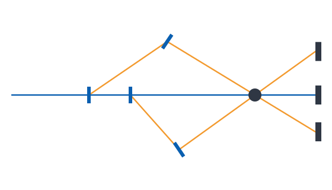
X-ray tomoscopyCrystal beam splitters for MHz imaging
Thin crystals split one X-ray beam into several, so a sample is seen from many angles at once, without turning it.
1000 frames per second of 3D X-ray movies, without rotating the sample. 6 papers →
Detectors and simulation
Crystals that catch rare events, and the code that models them.
-
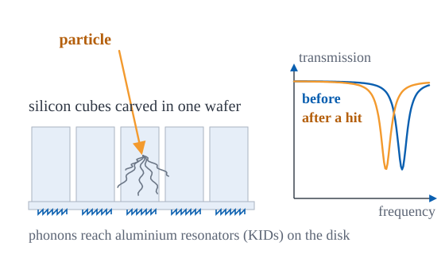
Cryogenic detectorsSilicon arrays for dark matter and neutrinos
A silicon wafer carved into dozens of cubes, each read by a superconducting resonator, listens for collisions of a few tens of eV.
26 eV baseline resolution of the first BULLKID array. 19 papers →
-
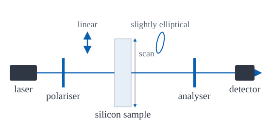
Gravitational wavesSilicon optics for the Einstein Telescope
The cold silicon optics of the Einstein Telescope must not change the polarisation of light: we map how much they do.
Below 10⁻⁷: the birefringence we measure in commercial silicon. 1 paper →
-
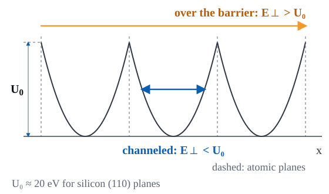
SimulationCrystal physics in Geant4
Channeling, coherent radiation and pair production in oriented crystals, simulated in Geant4 and in our own codes.
In Geant4: our models of channeling, radiation and pair production. 3 papers →